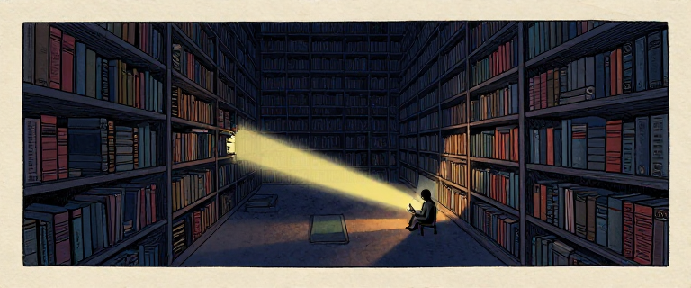
In Issue 6, we watched neural networks learn to see. They could look at a photograph and say "that's a cat." Vision was conquered. But language? Language was a different beast.
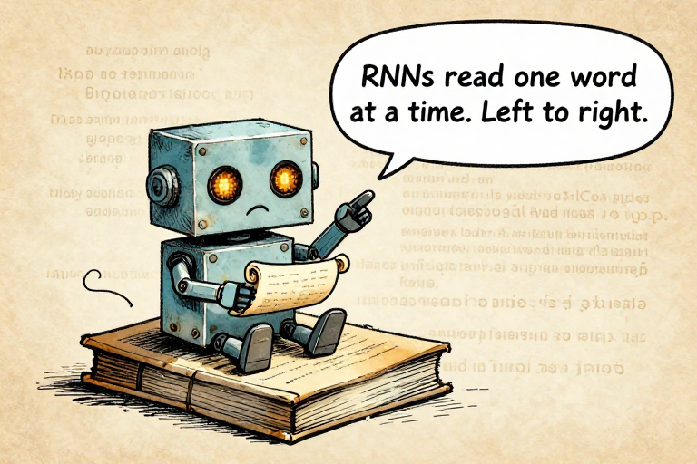
RNNs read one word at a time. Left to right.Each word updated a small bundle of numbers called a hidden state -- the model's attempt to remember everything it had read so far. Like rewriting a summary after every chapter. By chapter 20, the details from chapter 1 have faded.
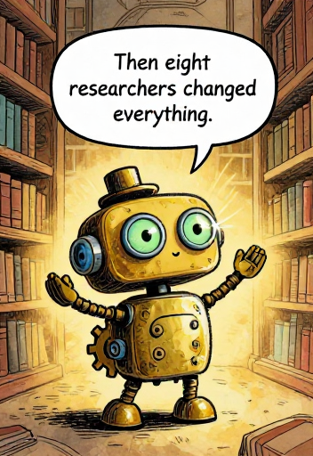
Then eight researchers changed everything.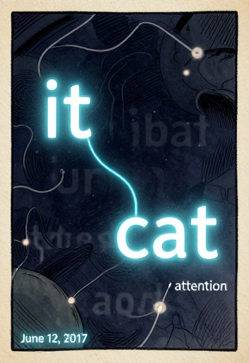
An improvement called LSTM (Long Short-Term Memory, 1997) added special "gates" to choose what to remember and forget. But the fundamental problem remained: one word at a time, everything compressed into a fixed-size memory, and no way to go back.
RNNs process one word at a time -- memory degrades. Self-attention connects every word directly.
RNNs read language like someone peering through a keyhole -- one word at a time, trying to remember everything on a tiny scrap of memory. The model could not go back. It could not look ahead. And the longer the text, the more old information degraded.
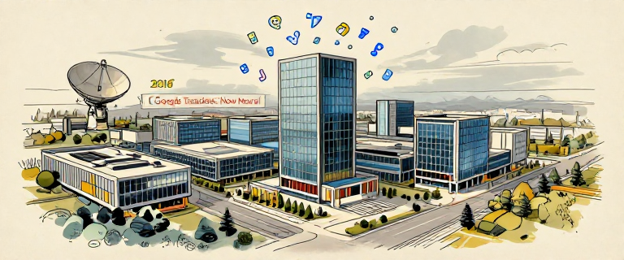
In November 2016, Google deployed neural machine translation for Google Translate, replacing a decades-old phrase-based approach. Millions of people used it daily. Even small improvements mattered at that scale.
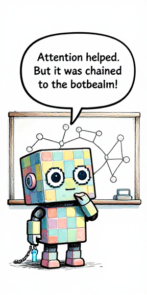
Attention helped. But it was chained to the bottleneck.The fix was called attention -- published in 2014 by Dzmitry Bahdanau, Kyunghyun Cho, and Yoshua Bengio. Instead of compressing the entire input into one vector, attention let the decoder "look back" at different parts of the input for each output word. It worked. But the underlying architecture was still an RNN.
Attention (2014) let the decoder look back at source words -- but was still bolted onto a slow RNN.
Several researchers at Google were growing frustrated. The attention mechanism was the best part. The RNN backbone was the bottleneck. What if you kept the attention and threw away everything else?
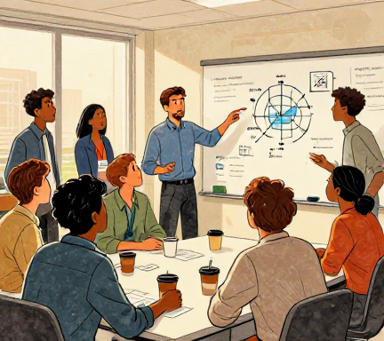
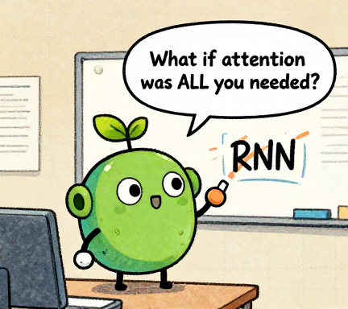
What if attention was ALL you needed?Think about how you read a complicated sentence. Do you read it one word at a time, left to right, never going back? Or do your eyes jump around -- rereading the beginning, skipping ahead, connecting words that are far apart? Which approach sounds more like how understanding actually works?
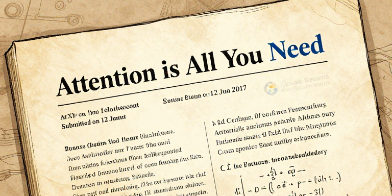
Eight authors. Twelve pages. One audacious claim: you could throw away the entire recurrent framework and replace it with a single mechanism -- attention alone. They called the architecture the Transformer.
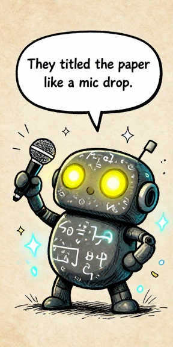
They titled the paper like a mic drop.The Transformer beat previous translation models in quality AND training speed.
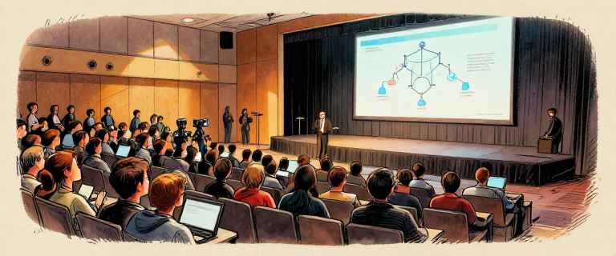
The speed improvement was even more dramatic. Because every word could attend to every other word simultaneously, the entire computation could be spread across GPU cores in parallel. No more waiting for word five to finish before starting word six.
Most of the eight authors eventually left Google to found AI companies.
The Transformer paper was written to solve machine translation. Its authors did not set out to create the foundation of ChatGPT, Claude, or the entire modern AI industry. But the architecture was so powerful and so general that it became exactly that. Great inventions often outgrow their inventors' intentions.
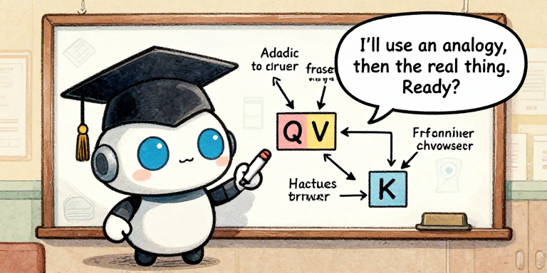
I'll use an analogy, then the real thing. Ready?Imagine you are at a party. Fifty people, all talking. An RNN listens to one person at a time, in order. By person 30, person 1 is a blur. Self-attention works differently: you can hear everyone simultaneously and instantly decide who is most relevant to what you need to understand right now.
Each word computes Query, Key, Value. Queries match against Keys to determine attention weights.
Now here is the clever part: multi-head attention. Instead of doing this once, the Transformer runs multiple attention operations in parallel (the original paper used 8 "heads"). Each head learns to focus on different kinds of relationships.
Each attention head captures a different type of relationship between words.
Type your own sentence and see which words pay attention to which -- try pronoun resolution, word sense disambiguation, or write your own examples.
Open Attention Visualizer →Self-attention lets every word in a sentence look at every other word simultaneously. Instead of reading left to right and hoping to remember, the model builds a complete web of relationships in a single step. This is why Transformers are so powerful -- and why they can be trained in parallel on modern GPUs.
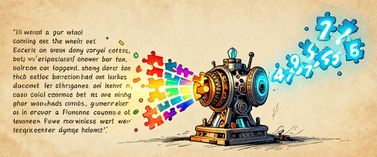
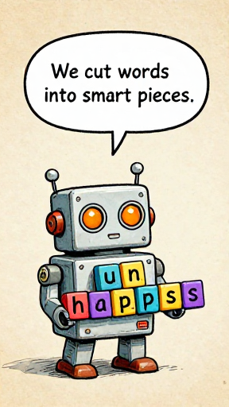
We cut words into smart pieces.How many words are in English? Between 170,000 and over a million. Add every language, typos, slang, URLs, emoji -- the number is effectively infinite. We can't give every word its own number. But individual letters carry almost no meaning. The solution: tokenization -- splitting text into subword pieces.
BPE merges frequent character pairs until common words become single tokens.
The result is elegant. Common words like "the" are single tokens. Rare words get split: "unhappiness" becomes [un][happi][ness]. The model handles any word, even one it has never seen before, by breaking it into familiar fragments.
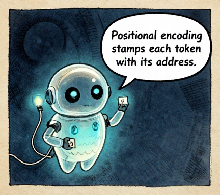
Positional encoding stamps each token with its address.Since the Transformer processes all tokens in parallel, it has no idea what order they are in. "Dog bites man" and "Man bites dog" would look identical. The solution: positional encoding -- stamping each token with a unique mathematical pattern. Think of it like putting an address on each puzzle piece: "I am token number 7 in this sequence."
Try tokenizing a word yourself! The word "unbreakable" would probably become [un][break][able]. Now try "antidisestablishmentarianism" -- how many pieces do you think that becomes? The model handles any word, even one it has never seen, by breaking it into familiar fragments.
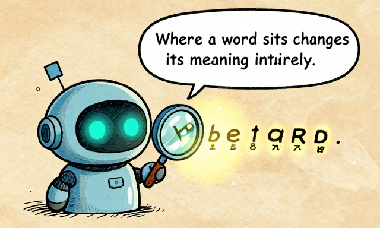
Where a word sits changes its meaning entirely.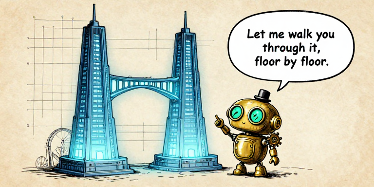
Let me walk you through it, floor by floor.The original Transformer has two halves: an encoder (which reads the input) and a decoder (which generates the output). For translation, the encoder reads the French sentence, and the decoder writes the English version.
The Transformer: Encoder reads input, Decoder generates output, Cross-Attention bridges them.
The architecture stacks a small set of ideas -- attention, feed-forward networks, residual connections, normalization -- into a repeating pattern. Later models used it differently: BERT (2018) used only the encoder. GPT (2018) used only the decoder. But all are descendants of this paper.
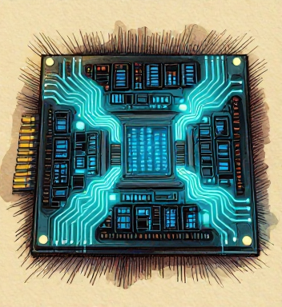
The breakthrough is not that any single component is revolutionary. It's that these ingredients, combined in this specific way, produce something far greater than the sum of their parts. And everything can run in parallel on GPUs.
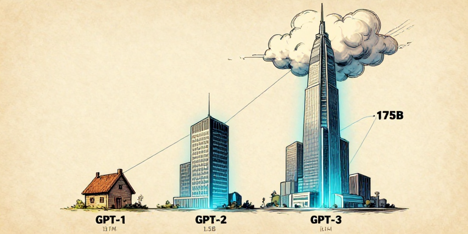
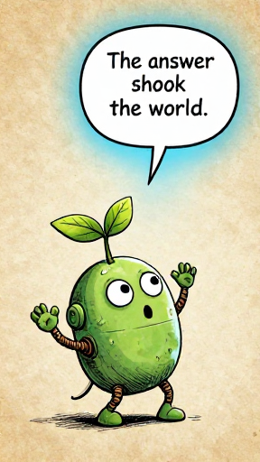
The answer shook the world.In June 2018, OpenAI researcher Alec Radford published GPT-1: the Transformer's decoder trained to predict the next word. 117 million parameters, 12 layers, trained on ~7,000 books. It worked well. Not spectacularly. But enough to ask: what if the only limit was scale?
In February 2019, GPT-2 arrived: 1.5 billion parameters, 48 layers. Ten times larger. Then OpenAI announced it was withholding the full model due to misuse concerns. Critics called it publicity-seeking. Supporters called it responsible foresight. Either way, the public was paying attention to language AI for the first time.
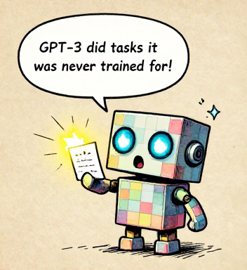
GPT-3 did tasks it was never trained for!GPT-3 could learn new tasks from just a few examples in the prompt.
Each generation was roughly 10x larger -- and each unlocked qualitatively new abilities.
Scaling revealed a strange law: make a model 10x bigger, and it does not just get 10% better. It sometimes learns entirely new skills the smaller version could not do at all. Nobody programmed these abilities in. They emerged from sheer scale.
GPT-3 was trained only to predict the next word. Yet it learned grammar, facts, translation, coding, and reasoning. Is "predict the next word" really a simple task? Or is it secretly the hardest task there is -- because to predict perfectly, you would need to understand everything?
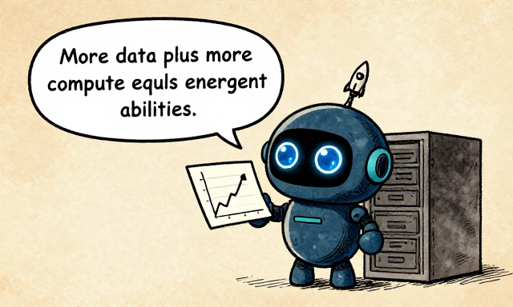
More data plus more compute equals emergent abilities.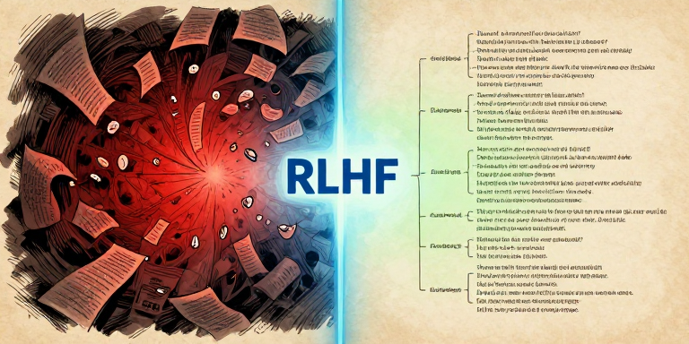
A raw language model is a mirror of its training data. The internet contains medical advice and misinformation, poetry and hate speech. A model trained to predict "what comes next" will produce all of it. Making models bigger made them more capable AND more dangerous.
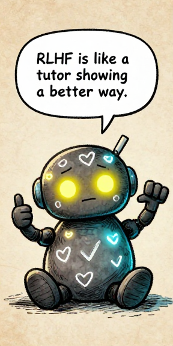
RLHF is like a tutor showing a better way.RLHF: Show examples, train a judge on human preferences, then optimize the model.
In January 2022, OpenAI published InstructGPT: a 1.3-billion-parameter model fine-tuned with RLHF was preferred by humans over the raw 175-billion-parameter GPT-3. A smaller model with values beat a larger model without them.
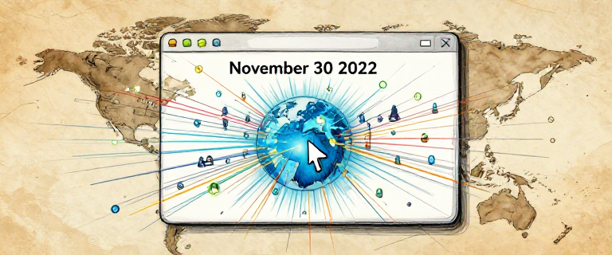
On November 30, 2022, ChatGPT launched as a free research preview. It reached 1 million users in 5 days. By January 2023, roughly 100 million monthly active users -- the fastest-growing consumer application in history. For comparison, TikTok took ~9 months to reach the same milestone.
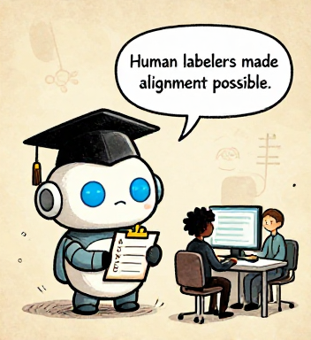
Human labelers made alignment possible.These human evaluators -- often contract workers in Kenya, the Philippines, and other countries, paid far less than the engineers -- are an invisible but essential part of modern AI. Their judgments teach the model what "good" looks like.
RLHF is not a complete solution. Models can still hallucinate, be tricked, and produce harmful outputs. But it represents a crucial insight: training a model to be capable and training it to be good are two different problems, and both require deliberate effort.
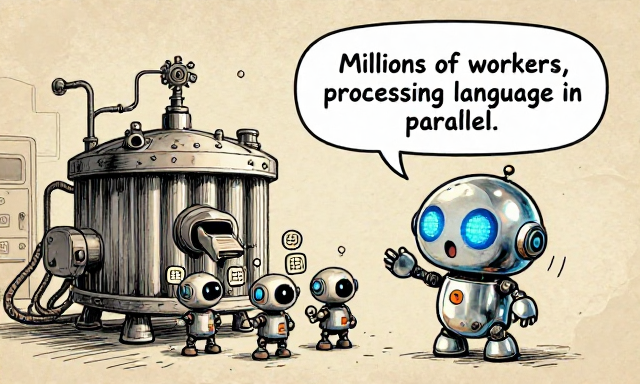
Millions of workers, processing language in parallel.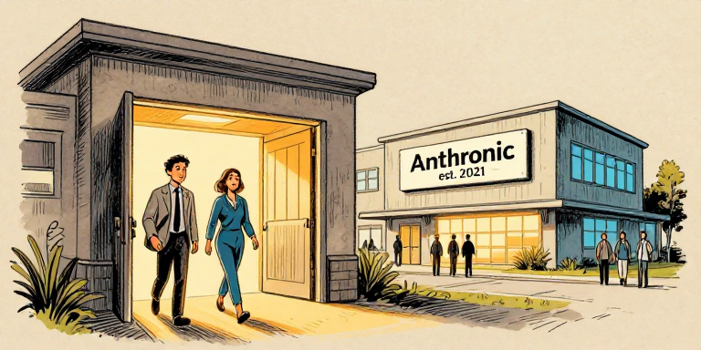
In 2021, Dario Amodei and Daniela Amodei left OpenAI and founded Anthropic. Dario -- PhD in computational neuroscience, former VP of Research at OpenAI -- believed AI safety could not be an afterthought. It needed to be the mission.
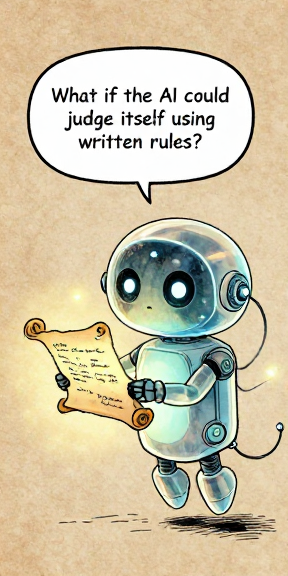
What if the AI could judge itself using written rules?In December 2022, Anthropic published Constitutional AI (CAI). The core idea: instead of relying on case-by-case human judgments, write a constitution -- a set of explicit principles -- and use it to guide behavior. Like how human societies work.
Constitutional AI: the model critiques and revises its own responses based on written principles.
Constitutional AI front-loads human judgment into written principles rather than case-by-case rankings.
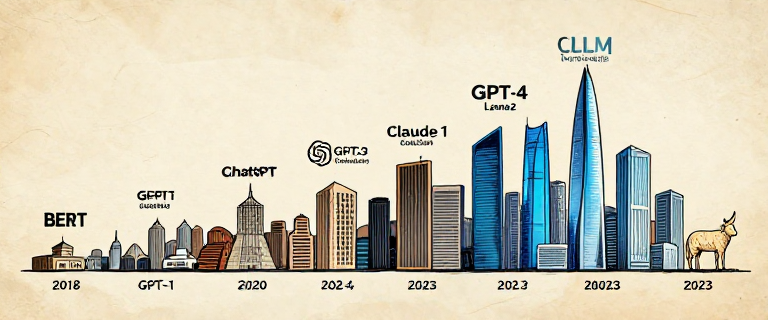
Claude 1 launched in March 2023. Claude 2 followed in July 2023 with a 100,000-token context window -- enough to process entire books. Meanwhile, Google released PaLM, Meta released Llama 2 as open source, and GPT-4 added multimodal capability.
Human societies use constitutions to encode values that outlast any individual leader. Could AI constitutions serve the same purpose? If you could write the rules that govern an AI's behavior, what principles would YOU include?
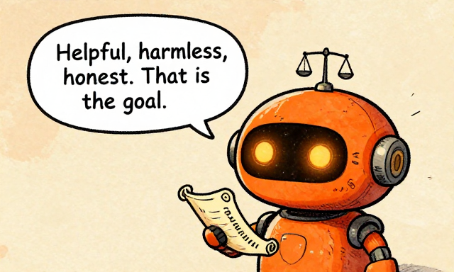
Helpful, harmless, honest. That is the goal.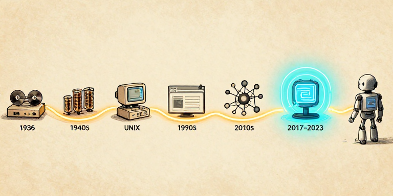
Turing imagined a machine that could follow any instruction. Von Neumann built one. Hopper taught it to understand English. The internet connected them all. Neural networks learned to see. And now Transformers have learned to read, write, and reason.
The Transformer did not replace neural networks, backpropagation, or GPUs. It stood on all of them.
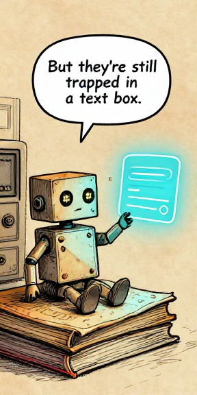
But they're still trapped in a text box.In 2021, Timnit Gebru, Emily Bender, Margaret Mitchell, and Angelina McMillan-Major asked: are LLMs actually understanding language, or just mimicking patterns like a sophisticated parrot? They raised critical questions about environmental cost, biased training data, and whether the race to scale is outpacing our ability to control what we are building.
The "Stochastic Parrots" paper argued that: (1) LLMs do not truly "understand" language; (2) training massive models has enormous environmental cost; (3) biases in training data get amplified at scale; (4) the race to scale is driven by corporate incentives, not just science. These are not fringe concerns -- they are central tensions in the story of modern AI.
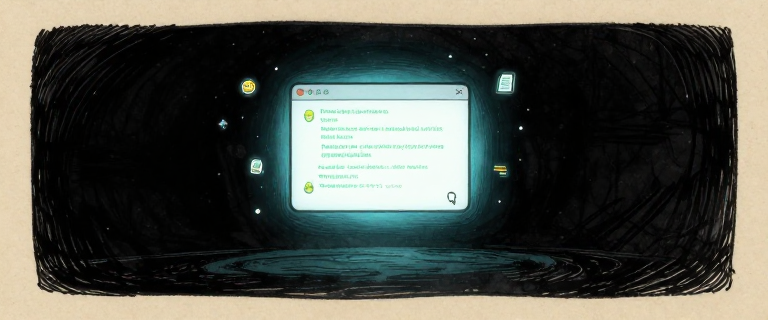
Here is where we are in early 2023: language models can write essays, code, poetry, and analysis. But they are still trapped. An LLM lives in a text box. It can write a Python function, but it cannot run it. It can describe a plan, but it cannot execute it.
Every revolution in computing follows the same pattern: someone builds a new layer of abstraction on top of everything that came before. The Transformer did not replace neural networks, backpropagation, or GPUs. It stood on all of them.
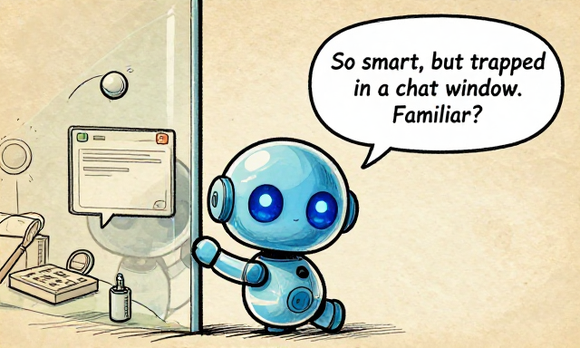
So smart, but trapped in a chat window. Familiar?